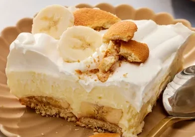

Banana Pudding

Banana pudding with vanilla wafers and whipped topping
Ingredients
- 8 oz. Cream Cheese, Room Temp
- 14 oz. Sweetened Condensed Milk
- 5 oz. Instant Vanilla Pudding Mix
- 3 Cup Skim Milk, Cold
- 1 tsp. Vanilla Extract
- 8 oz. Whipped Topping
- 1 Package Vanilla Wafers
- 4 Bananas
Steps
- Beat cream cheese in a large bowl until fluffy. Beat in condensed milk, then pudding mix. Gradually mix in cold milk until smooth, followed by vanilla.
- Fold in 1/2 of the whipped topping.
- Line the bottom of a 9x13-inch dish with vanilla wafers, arrange sliced bananas evenly on top.
- Cover with pudding mixture, and top with remaining whipped topping.
- Cover and chill before serving.